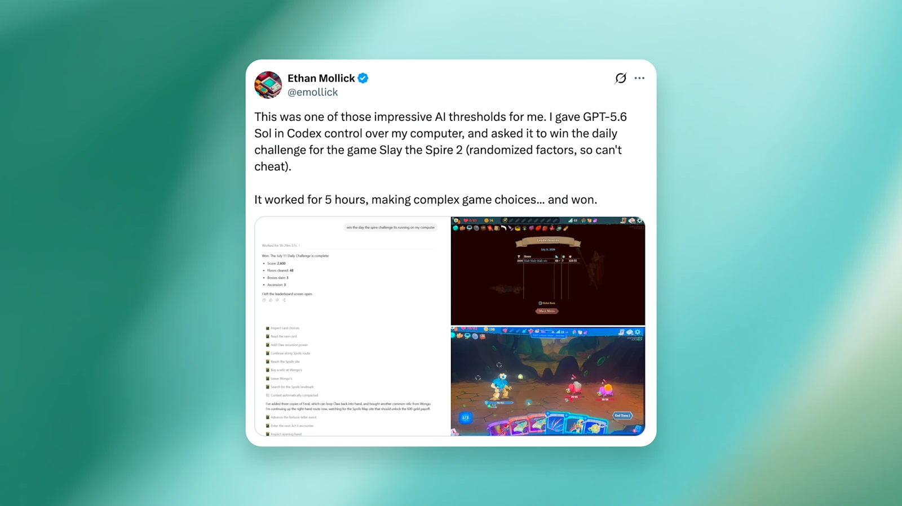

איך שני שינויים בהגדרות שילשו את הציון שלנו ב-ARC-AGI-3
GPT-5.6 Sol לא התקשה במשחקים משום שחסרה לו יכולת. ה-Harness גרם לו לשכוח את החשיבה שלו, ובהמשך גם את הפעולות הקודמות. כש-OpenAI הפעילה שמירת חשיבה ו-Compaction, הציון זינק כמעט פי שלושה ומספר טוקני הפלט ירד פי שישה.
GPT-5.6 Sol פתר בעיות פתוחות ותיקות במתמטיקה, בהן השערת כיסוי המחזורים הכפול, ואף ניצח במשחקים כמו Pokémon FireRed. אבל ב-ARC-AGI-3, בנצ׳מרק המבוסס על משחקי פאזל דו-ממדיים, הוא קיבל רק 7.8%. GPT-5.5 כמעט שלא הצליח לשחק כלל וקיבל 0.4% בלבד.
האם משחקי פאזל דו-ממדיים קשים במיוחד למודלים שלנו? או שמשהו אחר התרחש?
בנצ׳מרקים כמעט אף פעם אינם מודדים מודל AI בבידוד. הם מודדים גם שורה של החלטות פחות גלויות: הגדרות API, תכנון ה-Harness והפרומפטים. במקרה של ARC-AGI-3 גילינו שהפעלת שתי הגדרות API שבהן אנו משתמשים ב-ChatGPT וב-Codex, שמירת החשיבה ו-Compaction, שילשה את הציונים והפחיתה פי שישה את מספר טוקני הפלט בסט המשימות הציבורי.
מהו ARC-AGI-3?
ARC-AGI-3 הוא בנצ׳מרק שנועד למדוד עד כמה סוכני AI מסוגלים ללמוד ולהסיק. הסוכנים חוקרים משחקי 2D לא מוכרים ומנסים להבין את חוקיהם ללא הוראות מפורשות. אפשר לשחק ב-25 משחקי הדגמה באתר ARC Prize.
ה-Harness של ARC-AGI-3 גנרי במכוון, ללא כלים או יכולות מיוחדות. ההיגיון של ARC הוא ש-Harness פשוט חושף טוב יותר את מגבלות המודל ומאפשר השוואה הוגנת יותר בין מודלים. מפתחים מסחריים, לעומת זאת, מתאימים את ה-Harness ליכולות ולמאפיינים של כל מודל.

ככל שבדקנו לעומק, גילינו שחלק גדול מן הבלבול של המודל לא נבע מהמודל עצמו, אלא מן ההגדרות של ה-Harness.
ראשית, לאחר כל פעולה במשחק, כל החשיבה הפרטית של המודל נמחקה. בכל פעולה GPT-5.6 Sol נדרש להבין את המשחק מחדש, בלי לזכור את מה שחשב קודם. המודל עדיין ראה היסטוריה של המהלכים וכמה הערות קצרות, אבל לא את התוכניות, התובנות או המחשבות שהובילו אליהם.
שנית, ה-Harness השתמש בחלון קיטום מתגלגל. כשההיסטוריה התארכה, פעולות ישנות יותר הפכו לבלתי נראות. כלומר, GPT-5.6 Sol לא רק שכח את החשיבה הקודמת שלו, אלא איבד בהדרגה גם את הזיכרון של פעולותיו.
שתי התכונות האלה יחד, מחיקת החשיבה וקיטום מתגלגל, הסבירו במידה רבה מדוע המודל התקשה ללמוד לאורך זמן.
סוכנים מצליחים יותר כשהם זוכרים מה עשו
המודלים שלנו מאומנים לחשוב באמצעות הודעות חשיבה פרטיות לפני שהם מפיקים תשובה או קריאה לכלי. הודעות החשיבה האלה נשמרות כחלק מהיסטוריית השיחה. כשהשיחה נעשית ארוכה מדי, אנחנו מסכמים אותה וממשיכים.
כך המודלים מאומנים, וכך הם מופעלים ב-ChatGPT וב-Codex. כדי להתקרב לסביבת הפרודקשן שלנו, מימשנו את ה-Harness של ARC-AGI-3 באמצעות Responses API. ב-GPT-5.6, העברת מזהה התשובה הקודמת שומרת אוטומטית את החשיבה לאורך קריאות לכלים וסבבים נוספים.
כששמרנו את החשיבה, ראינו שני שינויים גדולים. ראשית, GPT-5.6 Sol השקיע פחות זמן בחשיבה לפני כל פעולה, מפני שלא נדרש לפרש את המשחק מחדש בכל תור. שנית, כשהוא זכר את מחשבותיו הקודמות, הוא למד טוב יותר לאורך זמן והפעיל אסטרטגיות עקביות.
במקום קיטום מתגלגל: Compaction
השיפור הבא הגיע כשהחלפנו את הקיטום המתגלגל ב-Compaction, הגדרה נוספת ב-Responses API.
ה-Harness המקורי של ARC-AGI-3 מתמודד עם מגבלת ההקשר באמצעות קיטום מתגלגל: כשהקשר השיחה חוצה 175,000 תווים, ההודעות הישנות ביותר נמחקות.
לקיטום מתגלגל יש שני חסרונות. ראשית, המודל מאבד תצפיות ופעולות מוקדמות. שנית, הוא מבצע חלק גדול מן המשימה כשחלון ההקשר שלו מלא יחסית, מצב שעלול לפגוע מעט בביצועים.
לאחר שהפעלנו Compaction, GPT-5.6 Sol הצליח לשמר טוב יותר את מה שלמד על כל משחק לאורך ריצות ארוכות. התוצאה הייתה ציון גבוה יותר בפחות טוקני פלט.
במימוש שלנו השתמשנו במגבלה של 175,000 טוקנים, ולא תווים. בפועל, ההבדל קטן יחסית במקרה הזה, מפני שרוב הטקסט הוא רשתות הפעולות של המשחק, שהטוקנייזר שלנו מקודד ביחס הקרוב ל-1:1.
ביחד, שמירת החשיבה ו-Compaction אפשרו ל-GPT-5.6 Sol במצב max להגיע לכמעט פי שלושה בציון, תוך שימוש בפי שישה פחות טוקני פלט.
מסקנה
הניסויים האלה מזכירים שבנצ׳מרקים כמעט אף פעם אינם מודדים מודל לבדו. הם מודדים חבילה שלמה של החלטות פחות נראות בנוגע להגדרות API, מבנה ה-Harness והפרומפטים. זו אינה הפעם הראשונה שבה הופתענו מציון נמוך בבנצ׳מרק ציבורי, ואז גילינו שמריץ ההערכה השתמש ב-Harness גנרי שהשמיט את הודעות החשיבה.
ההמלצות של OpenAI למפתחי API
- השתמשו ב-Responses API, לא ב-Chat Completions API הוותיק.
- שמרו את החשיבה לאורך הסבבים.
- הפעילו Compaction בשיחות ארוכות.
ולמי שמשווה בין מודלים, אנו ממליצים להסתמך על הערכות המשתמשות בהגדרות האלה, משום שהן משקפות בצורה הטובה ביותר את אופן השימוש האמיתי במודלים בתוך ChatGPT ו-Codex.
אנו מודים ל-ARC על שנים של עבודה יצירתית בתחום הערכת AGI ועל הניתוח שהוביל אותנו לבחון את התוצאה לעומק.